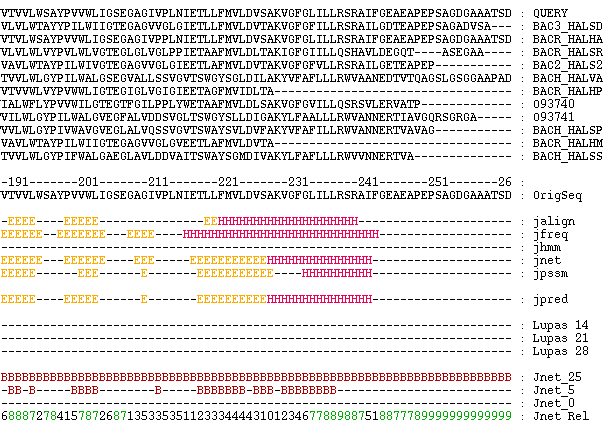

 Fig 5.6. Excerpt from a Jpred prediction for OPSD_SHEEP. Jpred builds a multiple alignment from a query sequence in order to more accurately predict secondary structure. The prediction is generated from a concensus of different prediction algorithms. For comparison, coiled-coil and solvent accessibility profiles are also calculated. |